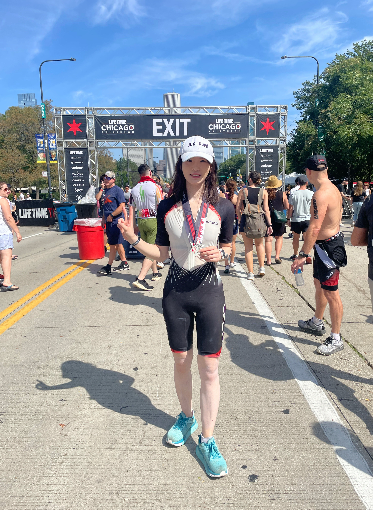
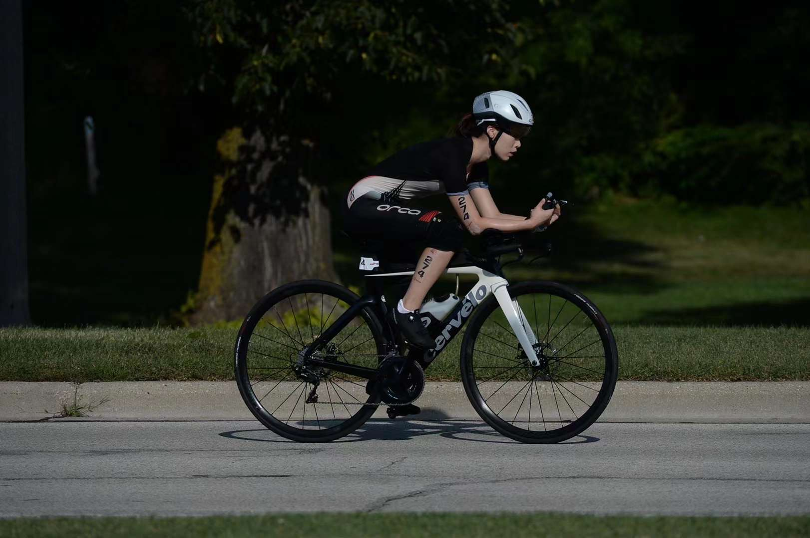
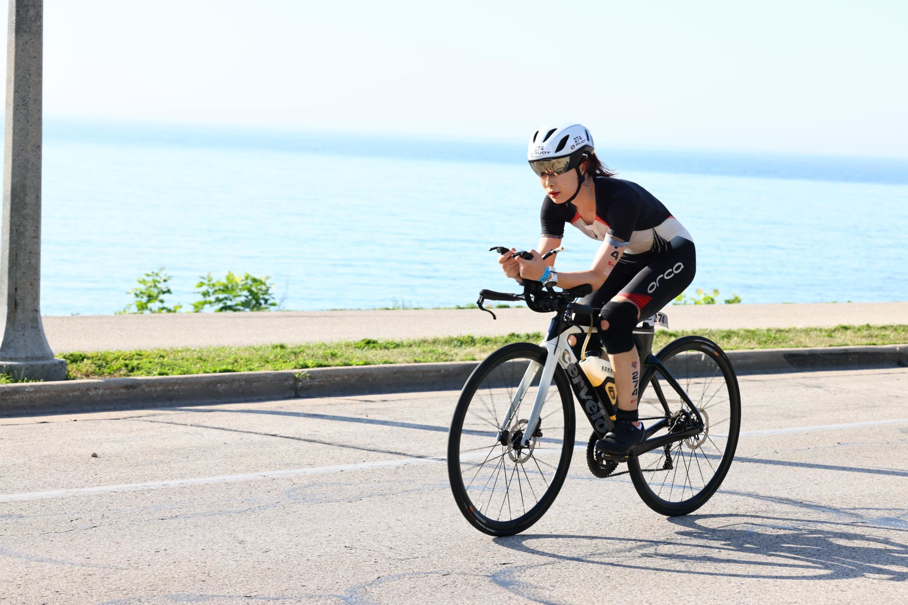
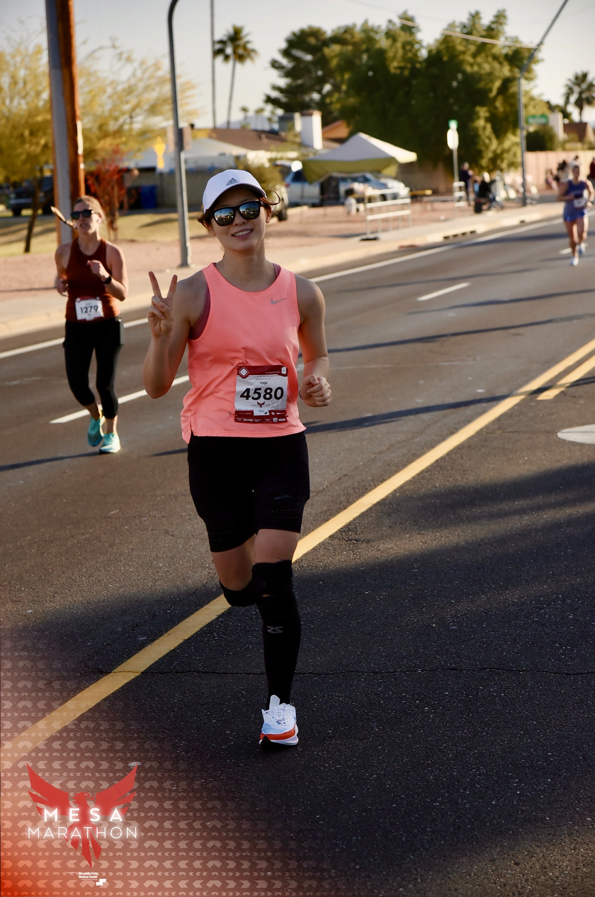
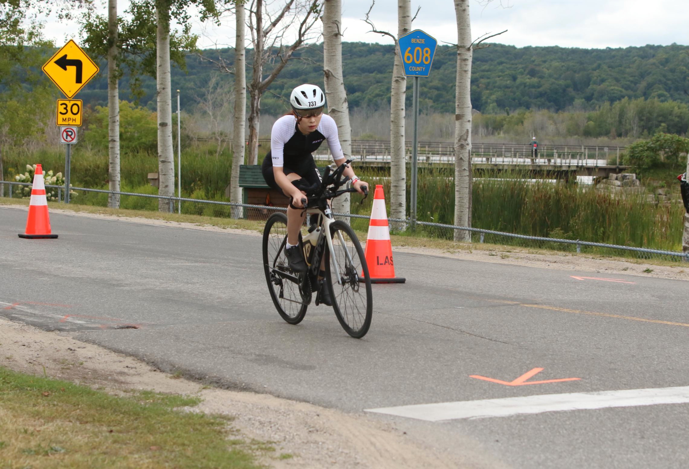
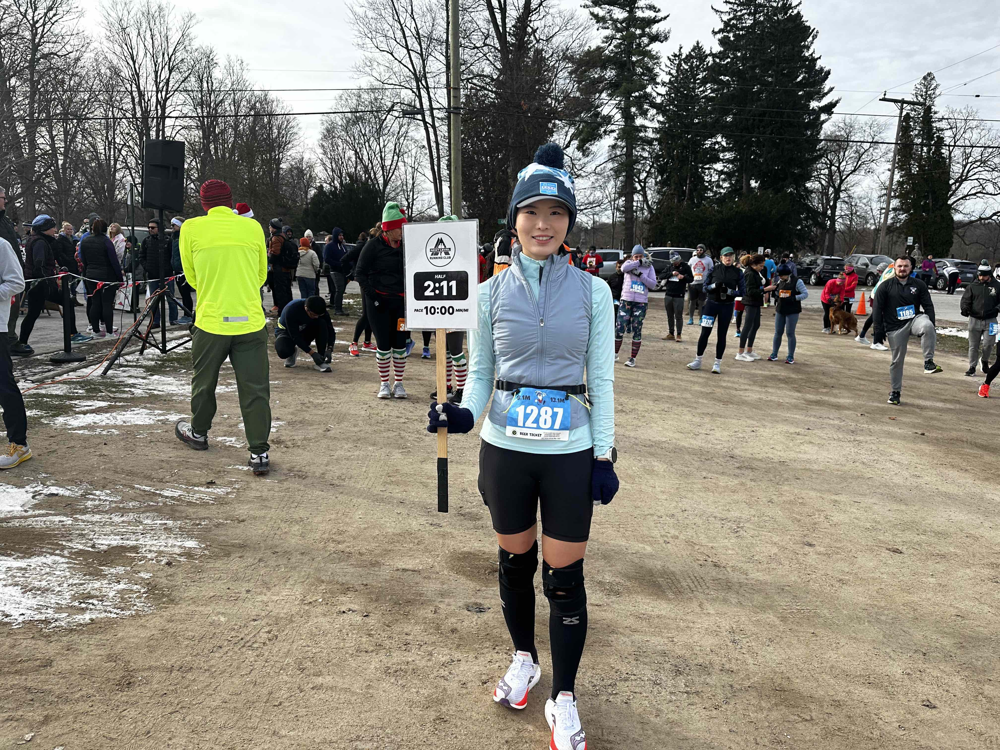
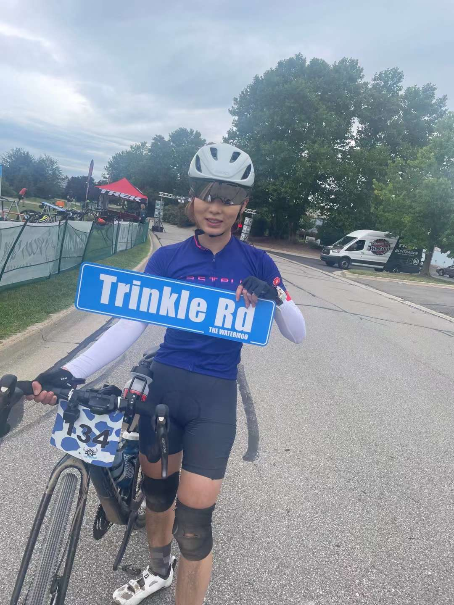

Running & Triathlon
In my spare time, I enjoy running and competing in triathlons. Like academic research, endurance sports have taught me patience, discipline, and persistence.
Running
Selected marathons:
- Glass City Marathon Toledo, Ohio · 2025
- Green Power Hike 50K Hong Kong · 2023
- Mesa Marathon Mesa, Arizona · 2023
- Detroit Marathon Detroit, Michigan · 2021
- Ann Arbor Marathon Ann Arbor, Michigan · 2021
Triathlon
- IRONMAN 70.3 Ohio Sandusky, Ohio · 2026
- Ann Arbor Triathlon Ann Arbor, Michigan · 2021 and 2026
- IRONMAN 70.3 Florida Haines City, Florida · 2025
- Battle of Waterloo 10-Stage Triathlon Waterloo, Michigan · 2023 and 2025
- IRONMAN Chattanooga Chattanooga, Tennessee · 140.6 miles · 2024
- IRONMAN 70.3 Michigan Frankfort, Michigan · 2022
- USA Triathlon Age Group National Championships Milwaukee, Wisconsin · 2022 · Qualified for the Olympic-Distance National Championships annually from 2022 through 2026
- Chicago Triathlon — Olympic Distance Chicago, Illinois · 2021
Race Memories






